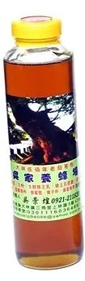
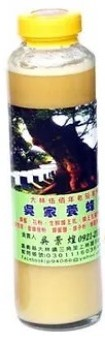

蜂蜜迷思

未結晶蜜:
近年來假蜜造假的方式越來越多元，也越來越逼真。其實可以利用透光檢查以及加水搖晃來分辨買的是真蜜還是假蜜。天然蜂蜜因為含有花粉，透光下會看起來有點混濁，而多數人工糖漿製成的蜂蜜沒有花粉，看起來會透明清澈。蜂蜜含有澱粉酶及其他蛋白質，加水用力搖晃會產生細緻且持續很久的泡沫，而以高果糖糖漿及香料等調製而成的假蜜，加水搖晃後泡沫會很快消失。

結晶蜜:
假蜜不等於結晶蜜。
蜂蜜中的葡萄糖和果糖等單醣總含量約占60％至70％，其中果糖比例較高的蜂蜜如龍眼蜜，不容易結晶，而葡萄糖比例較高的荔枝蜜、柳橙蜜等，在水分含量低、氣溫低於攝氏13度時，葡萄糖則容易形成晶體，產生結晶現象。反觀合成蜜，因為大多是由糖漿製成，因此不容易結晶。所以，會結晶的蜂蜜才是「真」蜂蜜。